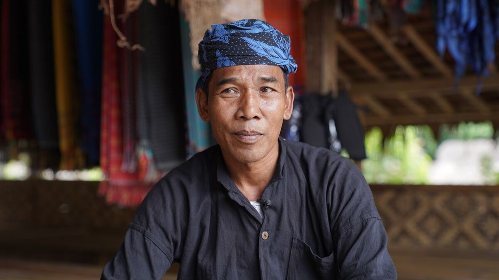
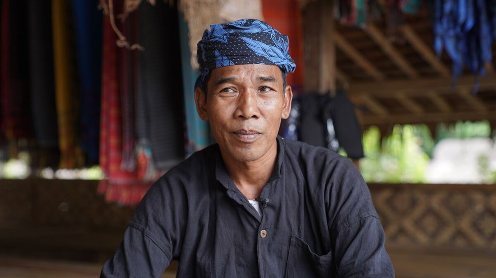

Peraturan yang perlu diketahui wisatawan

Pria dan wanita tidak boleh menginap di satu rumah
Peraturan ini tidak berlaku bagi pasangan suami dan istri.

Sumber : Kompas.id - ALBERDI DITTO PERMADI
Suku Baduy terkenal karena menolak modernisasi dan sangat menjaga warisan adat serta tanah nenek moyang mereka. Mereka hidup berdampingan dengan alam dan memiliki kearifan lokal yang menjaga kelestarian alam. Suku Baduy terbagi menjadi Suku Baduy Luar dan Suku Baduy Dalam, Suku Baduy luar identik dengan pakaian yang serba hitam, sementara suku Baduy Dalam identik dengan pakai yang serba Putih.
Terdapat waktu dimana kampung Baduy Dalam tertutup dari kunjungan, yaitu sekitar bulan Februari-Maret untuk tahun 2023 (menurut penanggalan adat Baduy bulan tersebut dikenal dengan Bulan Kawalu).
HimbauanAplikasi ini bertujuan untuk mengedukasi calon wisatawan mengenai Desa Wisata Baduy, mulai dari apa saja yang ada di Kampung Baduy Luar serta peraturan yang harus ditaati oleh pengunjung. Aplikasi ini hanya menyajikan informasi mengenai Kampung Baduy Luar.
Sumber : YouTube Channel Lebak Unique Official
Seba merupakan upacara tradisional yang sudah berlangsung sejak ratusan tahun silam. Upacara Seba merupakan kunjungan resmi masyarakat Baduy setelah melakukan panen. Upacara Seba bertujuan untuk membawa amanat ketua adat, memberi laporan dan menyampaikan harapan, juga menyerahkan hasil panen. Sebelum upacara Seba dimulai, masyarakat Baduy akan dterlebih dahulu melakukan upacara Kawalu (ungkapan terimakasih kepada Tuhan atas panen yang telah dilakukan) selama 3 bulan.
Untuk informasi lebih lanjut tentang suku Baduy dan juga destinasi wisata yang ada di Kabupaten Lebak, silahkan klik tombol di bawah ini.
Klik DisiniPeraturan ini tidak berlaku bagi pasangan suami dan istri.

Sumber : Kompas.id - ALBERDI DITTO PERMADI